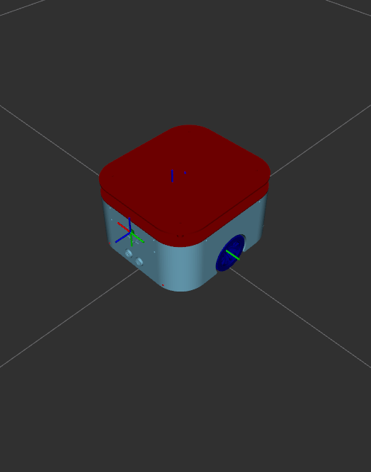
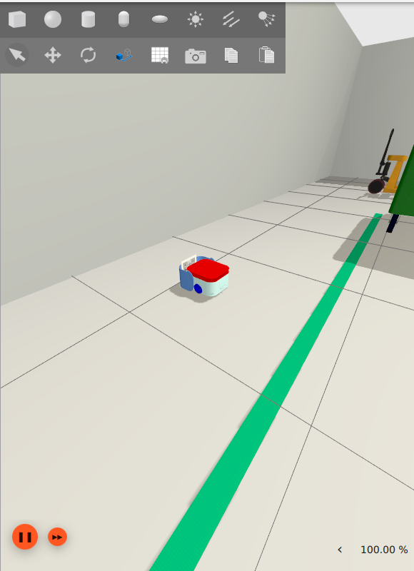
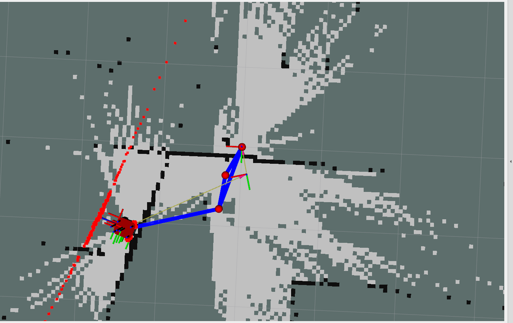

1. What MechaBot Is — and What This Post Teaches
MechaBot is a compact differential-drive autonomous mobile robot built end-to-end: robot modeling, Gazebo simulation, real hardware control, SLAM mapping, AMCL localization, Nav2 navigation, QR-code docking, battery-aware mission logic, and an experimental reinforcement-learning layer for adaptive cleaning. The core idea: one software stack that moves between simulation and real hardware with the same ROS 2 interfaces — the robot that maps a Gazebo warehouse is the same robot, bit for bit above the hardware interface, that maps my actual floor.
This post is written to double as a general guide. If you've never built a two-wheeled robot before, by the end you should understand why differential drive works the way it does, how a robot turns wheel spin into a pose estimate, how it decides where it is on a map it can't fully see, how it plans and follows a path, and how a simple proportional controller can dock a robot within millimeters of a target. Every equation is derived, not just stated, and every pseudocode block below is lifted from MechaBot's real source — variable names, gains, and thresholds included — not idealized textbook code.
2. A Primer: What Makes a Robot "Differential-Drive"?
A differential-drive robot has exactly two independently powered wheels sharing one axle, plus passive support (MechaBot uses four unpowered castors, like an office chair). There's no steering mechanism — no servo turns the wheels sideways. Instead, the robot steers by making its two wheels spin at different speeds. Spin both wheels at the same speed and the robot drives straight. Spin them at equal-and-opposite speeds and the robot rotates in place, pivoting about the midpoint of the wheel axle. Everything in between — a wide arc, a tight turn — comes from picking the right pair of wheel speeds.
This is why the layout is so popular for hobby and research robots: it needs only two motors and no steering linkage, yet it can still reach any position and orientation in a 2D plane. The price is a constraint worth naming explicitly, because it explains a lot of robotics vocabulary you'll see elsewhere: a differential-drive robot cannot move sideways instantaneously (it has no wheel pointed that way). This is called a nonholonomic constraint — the robot's reachable direction of motion at any instant is restricted, even though its reachable set of positions over time is not. A car has the same constraint, which is why parallel parking takes maneuvering instead of a straight sideways slide.
The geometric idea that makes the two-wheel-speeds-to-motion mapping click is the Instantaneous Center of Curvature (ICC): at any moment, both wheels are tracing arcs around one common point on the extended wheel axis. Driving straight is just an ICC at infinity. Spinning in place is an ICC exactly at the axle midpoint. Every other combination of wheel speeds places the ICC somewhere else along that line, and the whole robot rotates around it at one shared angular rate — which is exactly what the kinematics in §5 formalizes.

3. System Architecture
The stack follows a layered architecture — sensors and actuators at the bottom, task autonomy at the top. Every layer talks to its neighbors only through standard ROS 2 interfaces, which is what makes the sim/real swap possible.
SmacPlanner2D] --> BT[bt_navigator + recoveries] CT[controller_server
Regulated Pure Pursuit] --> BT end subgraph Loc["Mapping & Localization"] ST[SLAM Toolbox] -.builds map.-> MS[map_server] MS --> AM[AMCL particle filter] end subgraph Ctrl["Model & Control"] URDF[URDF/Xacro → robot_state_publisher → TF] R2C[ros2_control → diff_drive_controller] end subgraph HW["Sensors & Actuators"] LID[RPLIDAR] --- IMU[IMU] --- CAM[Camera] --- MOT[Wheel motors + encoders] end Autonomy --> Nav --> Ctrl Loc --> Nav HW --> Loc HW --> Ctrl
The workspace is organised as focused packages:
| Package | Responsibility |
|---|---|
mechabot_description | URDF/Xacro model, meshes, Gazebo sensor config, worlds, RViz configs |
mechabot_controller | ros2_control config, diff-drive controller, joystick teleop, twist_mux |
mechabot_firmware | Real-robot ros2_control SystemInterface plugin over serial, plus the ESP32 Arduino firmware it talks to |
mechabot_mapping | SLAM Toolbox configuration + saved occupancy-grid maps |
mechabot_localization | AMCL + map_server launch/config for saved maps |
mechabot_navigation | Nav2 planner, controller, smoother, behavior server, BT navigator, waypoint follower |
mechabot_scripts | Python autonomy: QR detection, maze solving, docking, patrol, cleaning, battery sim, RL memory |
mechabot_bringup | Launch files composing everything, sim or real |
rplidar_ros | RPLIDAR driver for the real LiDAR |
The frame chain
Everything in the stack hangs off one TF chain:
map → odom comes from localization (SLAM Toolbox while mapping, AMCL afterwards), odom → base_footprint comes from wheel odometry via diff_drive_controller, and the fixed robot geometry comes from the URDF through robot_state_publisher. When people say "my robot jumps around in RViz", they are almost always describing a disagreement between the first two transforms.
4. The Robot Model
The robot is defined in mechabot.urdf.xacro, split into base, sensors, Gazebo properties, and ros2_control modules. The key design decision is a single argument that switches the entire control backend:
<xacro:arg name="is_sim" default="true"/>With is_sim:=true the URDF's ros2_control block loads the ign_ros2_control/IgnitionSystem plugin; with is_sim:=false it loads mechabot_firmware/MechabotInterface — my custom serial hardware plugin — with the port hardcoded to /dev/ttyUSB1. Nothing else in the file changes.
The physical model has two driven wheels, four castors, a top lid, and three sensor frames (lidar_link, camera_link + optical frame, imu_link). Every link's mass comes from a real <inertial> tag in the URDF:
| Link | Mass |
|---|---|
| base_link | 5.0 kg |
| left / right wheel | 0.5 kg each |
| 4× castors | 0.2 kg each (0.8 kg total) |
| toplid_link | 2.0 kg |
| lidar_link | 0.5 kg |
| camera_link / imu_link | 0.1 kg each |
| Total | ≈ 9.5 kg |
and the geometry that matters for everything downstream:
| Parameter | Value |
|---|---|
| Wheel radius \(r\) | 0.034 m (from the collision sphere on each wheel link) |
| Wheel separation \(L\) | 0.185 m (wheel joints at \(y = \pm 0.0925\) m — the two numbers agree exactly) |
| Footprint polygon | \((\pm0.135,\ \pm0.115)\) m → 0.270 m × 0.230 m rectangle, used by both costmaps |
| Castor offsets | \(x=\pm0.085\) m, \(y=\pm0.065\) m from base_link origin, tiny 6.25 mm collision spheres |
| Wheel joints | continuous, axis \((0, 1, 0)\) |
One more subtlety worth calling out: the camera optical frame uses the standard optical convention rotation rpy="-π/2 0 -π/2", so OpenCV sees +z forward / +x right / +y down, regardless of how the physical camera link is oriented on the robot.
5. Differential-Drive Kinematics, Derived
Start from a single wheel. If it has radius \(r\) and spins at angular velocity \(\omega\), the point where it touches the ground moves at linear speed \(v = r\omega\) — the same rolling-without-slipping relationship as a bicycle wheel or a car tire. MechaBot has two such wheels, a left and a right, separated by \(L = 0.185\) m, both rigidly attached to the same rigid body.
Now place the ICC from §2 on the line through both wheels, a (signed) distance \(R\) from the robot's centerline. Because the whole body rotates about the ICC at one shared angular rate \(\omega_{body}\), each wheel's ground-contact speed equals \(\omega_{body}\) times its own distance from the ICC:
Two equations, two unknowns (\(R\) and \(\omega_{body}\)) in terms of the two wheel speeds. Adding and subtracting them and solving gives the robot's forward speed \(v\) (the ICC-to-centerline midpoint speed) and turn rate \(\omega\):
Substituting \(v_{L,R} = r\,\omega_{L,R}\) (wheel angular velocity, not to be confused with body \(\omega\)) gives the form actually used in code:
The controller needs the inverse map — body command in, wheel commands out — which just means solving the two equations above back for \(\omega_L,\omega_R\):
Plugging in MechaBot's numbers makes it concrete. Driving straight at \(v = 0.15\) m/s: both wheels spin at \(0.15/0.034 = 4.41\) rad/s. Rotating in place at \(\omega = 1.0\) rad/s: the wheels would need to split to \(\pm(0.185/2)/0.034 = \pm 2.72\) rad/s — which actually exceeds the ±2.0 rad/s per-wheel command-interface limit from §4's ros2_control block. That ceiling caps the achievable in-place spin rate at roughly \(\omega_{max} = 2.0 \cdot r \cdot 2/L \approx 0.735\) rad/s, well under the body-level ±2.5 rad/s the diff_drive_controller advertises in §6 — a reminder that the tighter of two stacked limits is the one that actually matters. This same algebra is behind diff_drive_controller, wheel odometry, in-place rotations, and the QR alignment controller later.
Odometry integration
Wheel feedback is integrated into a planar pose \((x, y, \theta)\) at every control cycle. This is literally walking the ICC-arc forward by a small timestep and approximating it as a straight-line step (Euler integration):
This is the entire odom → base_footprint transform. It drifts — every small error in \(r\) or \(L\) integrates forever, and Euler integration itself accumulates a small curvature error every step even with perfect wheel data — which is exactly why the map frame and a localizer exist. A common refinement (not used here, but worth knowing) is to integrate the exact arc instead of a straight-line chord when \(\omega \neq 0\); at MechaBot's control rates and speeds the difference is negligible next to wheel-calibration error.
6. One Control Stack, Two Backends
The controller manager runs at 100 Hz with diff_drive_controller/DiffDriveController configured from the physical geometry, plus limits that protect the robot from unreasonable commands:
| Parameter | Value |
|---|---|
wheel_radius / wheel_separation | 0.034 m / 0.185 m |
| Odometry publish rate | 100 Hz, base_frame_id: base_footprint, odom TF enabled |
cmd_vel_timeout | 0.5 s (robot stops if commands go stale) |
| Linear velocity / acceleration | \(|v_x| \le 2.0\) m/s, \(|a_x| \le 1.0\) m/s² |
| Angular velocity / acceleration | \(|\omega_z| \le 2.5\) rad/s, \(|\alpha_z| \le 2.5\) rad/s² |
| Jerk limits | defined (0.5 m/s³ linear, 2.24 rad/s³ angular) but has_jerk_limits: false — not actually enforced |
Above diff_drive_controller, a twist_mux node arbitrates who is allowed to drive:
| Source | Topic | Priority | Timeout |
|---|---|---|---|
| Safety-stop lock | safety_stop | 255 (overrides everything) | 0.0 s — must be actively held |
| Joystick | joy_vel | 99 | 0.5 s |
| Navigation (Nav2) | cmd_vel | 90 | 0.5 s |
| Keyboard | key_vel | 80 | 0.5 s |
In practice this means a human on the joystick always wins over autonomous navigation — exactly what you want while debugging a robot that's about to hit something.
The real hardware interface
The sim-to-real bridge is a C++ hardware_interface::SystemInterface plugin, mechabot_firmware::MechabotInterface, using LibSerial at 500,000 baud. It exports one velocity command interface and position + velocity state interfaces per wheel. Its write() builds a compact formatted command string every cycle:
// mechabot_firmware/src/mechabot_interface.cpp — write()
char right_sign = velocity_commands_[0] >= 0 ? 'p' : 'n';
char left_sign = velocity_commands_[1] >= 0 ? 'p' : 'n';
message << "r" << right_sign << zero_pad << abs(velocity_commands_[0])
<< ",l" << left_sign << zero_pad << abs(velocity_commands_[1]) << ",";
// e.g. "rp05.30,ln12.45," = right +5.30 rad/s, left -12.45 rad/s
esp_.Write(message.str());and read() parses the returning line the same way, integrating position in software since the firmware only reports velocity:
// read() — comma-separated tokens like "rp05.30,ln12.45,"
for each token in ReadLine(esp_, '\n', timeout_ms=100):
sign = (token[1] == 'p') ? +1 : -1
value = parse_double(token[2:])
if token[0] == 'r': velocity_states[0] = sign * value
if token[0] == 'l': velocity_states[1] = sign * value
position_states[i] += velocity_states[i] * dt // integrated on the ROS sideThe payoff: the ROS side is completely independent of the embedded implementation. Swapping sim for real is one launch argument, and the URDF, controllers, SLAM, AMCL, and Nav2 configs are all shared. The whole nav stack was debugged once, in sim, and simply worked on hardware.
7. Inside the ESP32: PID + Feedforward on the Motors
Everything above assumes the wheels obey a commanded angular velocity. Making that true is the ESP32's job, and it's worth walking through because it's a self-contained example of a classic embedded control loop. The board drives two 12 V DC gearmotors through an L298N H-bridge (PWM pins 15/19, direction pins 2, 4, 5, 18) and reads quadrature encoders on interrupt pins (right: GPIO 22/23, left: GPIO 16/17) at 330 ticks per revolution.
Measuring wheel speed from ticks
An interrupt service routine fires on the encoder's phase-A edge and uses phase-B's level to determine direction:
void rightEncoderCallback() {
if (digitalRead(right_encoder_phaseB) == HIGH) right_encoder_ticks--;
else right_encoder_ticks++;
}Every 100 ms control cycle (10 Hz), the accumulated tick count converts to an angular velocity the same way any incremental encoder does — ticks over the counting period, scaled to radians:
CHANGE mode — it fires on both the rising and falling edge of that one channel (2× decoding), reading phase B only to determine direction. Full 4× quadrature decoding would fire interrupts on both edges of both channels for twice the resolution again. It's a legitimate design tradeoff (simpler ISR, fewer interrupts to service) that trades off some low-speed velocity-estimate resolution.PID plus feedforward
A pure PID loop on velocity works, but it's sluggish at startup because the controller has to "discover" how much PWM a given speed needs. MechaBot's firmware instead combines a feedforward term (a pre-computed PWM-per-rad/s ratio, derived once from bench testing at 100 RPM) with a PID trim on top of it:
| Constant | Value |
|---|---|
| \(K_{ff}\) (left / right) | 7.8 / 6.7 PWM-counts per rad/s |
| \(K_p, K_i, K_d\) (both wheels) | 11.0, 2.5, 0.0 — a PI controller in practice, no derivative term |
| Output clamp | PID trim limited to ±80 counts, final PWM to [0, 255] (8-bit, 1 kHz) |
| Startup boost | a one-shot higher "start PWM" (160 left / 150 right) breaks static friction, then drops to the min-moving PWM (35 both) once the wheel is turning |
| Stop threshold | commands below 0.01 rad/s are treated as zero |
This pairing is a common pattern anywhere precise low-level control meets a system with real friction and inertia: feedforward gets you close immediately using a known plant model, feedback (PID) corrects for whatever the model got wrong. A PID loop alone would eventually converge to the same PWM, but only after several control cycles of error had accumulated — feedforward removes that lag.
Encoder ticks per revolution, serial baud rate (500,000), and the packet format all match exactly between the ESP32 sketch and the ROS-side MechabotInterface plugin from §6 — they're a matched production pair, not two independently-tuned pieces.
8. Sensors: Simulated Like the Real Ones
Gazebo sensors are configured to match the real hardware's character, not an idealised version of it:
| Sensor | Configuration |
|---|---|
LiDAR (/scan) | GPU LiDAR, 360 samples over \(2\pi\), 5 Hz, range 0.15–12.0 m, 0.02 m resolution, Gaussian noise \(\sigma = 0.01\) — mirroring the RPLIDAR A1 |
IMU (/imu/out) | 100 Hz; quaternion converted to yaw for rotation control |
Camera (/camera/image_raw) | 640 × 480 @ 10 Hz, 1.396 rad horizontal FOV, clip 0.02–8.0 m |
Wheel contact is tuned the same way: the driven wheels get near-infinite friction (\(\mu \approx 10^{15}\)) so they never slip, while the four castors get low friction (\(\mu = 0.01\)) so they roll freely and never fight the differential-drive kinematics from §5 — an important sim detail, since a differential-drive model is only valid if the only wheels that matter are the two driven ones.

ware_house Ignition Gazebo world — the same shelving, dock markers, and lane markings the SLAM and Nav2 stacks below actually operate against.Each LiDAR beam is a polar measurement \(z_i = (r_i, \phi_i)\) with \(\Delta\phi \approx 2\pi/360\). The autonomy nodes derive a single scalar from it — the front obstacle distance — used for emergency stops and docking thresholds; in the read_lidar diagnostic node this is literally mean(ranges[-1:] + ranges[:1]), i.e. just the single ray dead ahead, with a wider 20-ray sector version present in the code but commented out. For yaw control, the IMU (or camera-frame) quaternion collapses to the standard yaw-only extraction:
9. Mapping with SLAM Toolbox
Mapping uses SLAM Toolbox's synchronous node (sync_slam_toolbox_node — scans are processed in strict order, not asynchronously) with the Ceres solver (SPARSE_NORMAL_CHOLESKY + Levenberg–Marquardt trust region + Schur-Jacobi preconditioner), in mode: mapping. Conceptually, graph SLAM estimates the set of robot poses \(X\) that best explains all constraints simultaneously:
where each \(e_i\) is the error of an odometry, scan-matching, or loop-closure constraint and \(\Omega_i\) weights how much you trust it. Concretely, a new scan is only folded into the graph once the robot has moved 0.5 m or turned 0.5 rad (minimum_travel_distance / minimum_travel_heading) — this is both a compute saver and a way to avoid adding near-duplicate constraints. Loop closure is enabled (do_loop_closing: true), searching an 8 m × 8 m window at 0.05 m resolution for a candidate chain of at least 10 nodes with a correlation response above 0.35 (coarse) / 0.45 (fine) before accepting it — loop closures are what pull accumulated odometry drift back into shape; without them, the two ends of a long corridor never quite meet.

Occupancy grid math
The output map stores each cell as unknown (−1), free (0), or occupied (100), at 0.05 m/cell for both shipped maps. Converting a grid cell \((m_x, m_y)\) back to world coordinates — needed later when the cleaning planner turns cells into waypoints — is a scale plus the map-origin rigid transform:
The project ships two saved maps: qr_maze (288×311 cells ≈ 14.4 m × 15.6 m, origin at \((-9.07,-7.73)\)) and small_house (500×500 cells ≈ 25 m × 25 m, origin at \((-12.5,-12.5)\)) — both centered so the robot starts well inside positive map coordinates.
10. Localization with AMCL
Once a map exists, AMCL estimates the posterior over the robot pose with a particle filter — a set of weighted pose guesses that collectively approximate the true probability distribution instead of tracking one single estimate:
where \(x_t\) is the pose, \(z_t\) the LiDAR scan, \(u_t\) the odometry motion, and \(m\) the known map. Each cycle repeats three steps over every particle in the set — this is the entire algorithm, and it's worth internalizing as pseudocode since it generalizes to almost every particle filter you'll meet:
for each particle i in particles: # e.g. 500–2000 of them
particle[i].pose = sample_motion_model(u_t, particle[i].pose) # 1. predict
particle[i].weight = measurement_model(z_t, particle[i].pose, map) # 2. weight
normalize(particle.weight for particle in particles)
particles = resample(particles, weighted by particle.weight) # 3. resample
pose_estimate = weighted_mean(particles)MechaBot uses the DifferentialMotionModel — noise coefficients \(\alpha_1=\alpha_2=\alpha_3=\alpha_4=0.2\), covering rotation-from-rotation, rotation-from-translation, translation-from-translation, and translation-from-rotation error — 500–2000 particles, the likelihood_field laser model with 60 beams, and update thresholds of 0.25 m / 0.2 rad so the filter only spends compute when the robot has actually moved. Resampling happens every update (resample_interval: 1); the augmented-MCL random-particle-injection recovery mechanism is present in AMCL but explicitly disabled here (recovery_alpha_slow = recovery_alpha_fast = 0.0) — MechaBot trusts its motion model enough not to need it. The likelihood-field model scores a particle by how close each projected beam endpoint lands to an obstacle in the map:
where \(d\) is the distance from the measured endpoint to the nearest obstacle. The initial pose is seeded at the dock (\(x = 1.5,\; y = 5.18,\; \theta = 1.57\)), so the robot wakes up knowing roughly where it is instead of needing a global-localization search on every boot.
11. Navigation: Nav2 End to End
Nav2 brings up planner_server, controller_server, smoother_server, behavior_server, bt_navigator, and waypoint_follower under a lifecycle manager, at a controller frequency of 20 Hz.
Global planning — SmacPlanner2D
The global planner is grid-based A*-style search over the costmap, minimizing the classic:
with \(g\) the accumulated path cost and \(h\) the heuristic to goal. A cost-travel multiplier of 2.0 makes cells near inflated obstacles genuinely expensive, so the planner prefers open space over wall-scraping shortcuts (up to 1,000,000 search iterations, 2 s planning budget, 0.125 m goal tolerance). A separate, standalone SimpleSmoother stage then relaxes the raw grid path (up to 1000 iterations with refinement) before it ever reaches the controller.
Local control — Regulated Pure Pursuit
The local controller picks a lookahead point on the global path and steers toward it. If that point is at \((x_L, y_L)\) in robot coordinates at lookahead distance \(L_d\), the commanded curvature and angular velocity are:
The "regulated" part scales speed down in tight curvature (below a 0.9 m turn radius, down to a 0.25 m/s floor) and near obstacles (cost-scaling starts 0.3 m from an obstacle), and adds collision checking up to 1.0 s ahead on the carrot. MechaBot runs it deliberately slow and precise: 0.15 m/s desired velocity, adaptive lookahead 0.30–0.50 m (1.5 s lookahead time), rotate-in-place whenever heading error exceeds 45°(at 1.8 rad/s, accel-limited to 3.2 rad/s²), reversing allowed, and tight goal tolerances of 0.04 m / 0.04 rad — because the docking approach pose in §12 needs to be exact.
Costmaps and inflation
Both costmaps run at 0.05 m/cell with the same 0.27 m × 0.23 m footprint from §4. The local costmap is a 3 m × 3 m rolling window fed only by the live LiDAR (obstacle + inflation layers); the global costmap adds a static layer from the saved map, and tracks unknown space as unexplored rather than free. Both share an inflation layer (radius 0.30 m, cost scaling 4.0) that decays cost exponentially with distance from obstacles:
This buffer is what turns "collision-free" paths into comfortable paths.
The behavior tree
Recoveries live in simple_navigation_w_replanning_and_recovery.xml — a deliberately flat tree, not the stock Nav2 tree's branching fallback logic:
RecoveryNode(retries=3, name="NavigateRecovery"):
try:
PipelineSequence("NavigateWithReplanning"):
RateController(hz=1.0):
ComputePathToPose(goal, path, planner_id="GridBased")
FollowPath(path, controller_id="FollowPath")
on_failure:
Sequence:
Wait(duration=3.0s)
BackUp(dist=0.30m, speed=0.15 m/s)
Spin(dist=3.14 rad) # a full 180°
# retries the whole thing up to 3 times before giving upIn sim the robot never gets stuck; on a floor with castors and carpet edges it does, and this fixed wait → back-up → 180° spin sequence is what turns "demo" into "leave it running."
12. QR-Code Docking: Visual Servoing for the Last 60 cm
Nav2 is good at reaching a pose, but charging contacts need alignment tighter than a 4 cm map-frame tolerance can guarantee. So docking is split into two phases: Nav2 gets the robot to a pre-dock pose, then a camera + LiDAR controller takes over for the final approach — all detection uses OpenCV's built-in cv2.QRCodeDetector, never ArUco.
(Nav2 to pre-dock pose) PreDock --> Acquire: search for QR marker Acquire --> Align: marker visible Align --> Approach: pixel error small Approach --> Docked: LiDAR d ≤ threshold,
max travel, or timeout Docked --> [*]: charging
The pre-dock pose
The pre-dock pose is computed by backing away from the dock pose \((x_{dock}, y_{dock}, \theta_{dock})\) along the dock heading:
With the dock at \((1.5,\, 5.18,\, 1.57)\), auto_docking_with_battery.py uses a standoff of \(d = 0.55\) m, landing at roughly \((1.5,\, 4.63)\) — 55 cm straight out from the charger, facing it. (The RL-augmented cleaning node in §15 uses a slightly larger 0.60 m standoff for the same maneuver — the two scripts were tuned independently.)
Proportional visual servoing — the real gains
For docking the robot never decodes the QR payload — cv2.QRCodeDetector.detect() returns only the four corners, and the controller needs just their centroid \(c_x\). The horizontal pixel error against the image center drives yaw with a plain proportional law:
MechaBot actually ships two docking implementations with different gains, tuned for different amounts of caution:
# auto_dock_undock.py — align_with_qr()
error = qr_center_x - image_width / 2
if abs(error) < 5: # px, tight tolerance
stop()
else:
angular_speed = -error * 0.003 # Kp = 0.003, unclamped
publish(linear=0.0, angular=angular_speed)
# auto_docking_with_battery.py — align_with_qr(), safer version
error = qr_center_x - image_width / 2
if abs(error) < 10:
stop()
else:
angular_speed = clip(-error * 0.0015, -0.12, 0.12) # gentler Kp, hard clip
publish(linear=0.0, angular=angular_speed)Final approach in both scripts creeps forward while steering on the same pixel error, but at a smaller gain than alignment (so forward motion doesn't overshoot heading corrections) and with independent stop conditions layered on top so no single sensor is a single point of failure:
# auto_docking_with_battery.py — dock_forward()
if front_distance < 0.160: stop("lidar")
if odom_travelled >= 0.65: stop("max travel") # safety fallback
if qr_detected:
correction = clip(-(qr_center_x - image_width/2) * 0.0010, -0.08, 0.08)
else:
correction = 0.0
publish(linear=0.050, angular=correction)The simpler auto_dock_undock.py uses a 0.15 m LiDAR threshold and a 0.002 steering gain at 0.05 m/s — close enough to the battery-aware version's 0.160 m / 0.0010 that they're clearly the same idea tuned twice. Any rotation to a target yaw (undocking, maze turns) uses the same wrapped-error proportional law you'd use on any robot:
The atan2 wrap keeps \(e_\theta \in [-\pi, \pi]\) so the robot never rotates the long way around.
Layered stop conditions and QR memory
The final approach never trusts one sensor: it stops on any of LiDAR front distance below threshold, odometry travel past a max distance, or a timeout. One more real-world fix lives here: the QR marker drops out for a few frames under motion blur, so the battery-aware controller keeps a 0.7 s QR memory (self.qr_memory_time = 0.7) — briefly losing the marker continues on the last known heading instead of aborting or stalling, and if the marker stays lost past that window the robot pivots to search, using the sign of the last known pixel error to guess which way to turn.
auto_docking_with_battery.py demo above uses a separate, much lower 5% threshold as a hard abort during any active Nav2 task — if it's ever hit, the task is cancelled and the robot stops immediately. These aren't two tiers of one unified safety system; they're two independently-tuned thresholds living in different scripts that solve a similar problem (don't let the robot strand itself) in slightly different ways.13. The QR Maze Solver
The same camera reads QR payloads (left, right, stop) posted around a Gazebo maze, this time via detectAndDecode(). The node is a small, real finite-state machine:
state = "FORWARD"
loop at control rate:
if state == "FORWARD":
cmd = (linear=0.15, angular=0.0)
if front_distance <= 0.45: # wall / intersection reached
if qr_command == "stop": state = "STOPPED"
elif qr_command in ("left","right"):
target_yaw = normalize(current_yaw + (+1.57 if qr_command=="left" else -1.57))
state = "TURNING"
else: cmd.linear = 0.0 # no command yet: hold
elif state == "TURNING":
cmd = (linear=0.0, angular=+0.3 if qr_command=="left" else -0.3)
if abs(normalize(target_yaw - current_yaw)) < 0.1:
state = "FORWARD"; qr_command = None
elif state == "STOPPED":
cmd = (linear=0.0, angular=0.0)
publish(cmd)It's not a maze-graph search or an occupancy-grid flood fill — there's no map involved at all. It's reactive sign-following: drive until a wall forces a decision, read the last QR command, execute a fixed ±90° turn using the same wrapped-heading proportional law from §12, repeat. It's the same three primitives — drive, rotate-to-yaw, read the world — recombined from the docking code.
14. Battery-Aware Cleaning and Coverage Planning
The most complete mission is a vacuum-style cleaning system. A simulated battery drains at 0.25%/s while working and charges at 2.0%/s on the dock:
When \(B\) drops below 45%, the node cancels the current Nav2 goal, returns to the pre-dock pose, runs the full QR/LiDAR docking sequence from §12, charges to 100%, undocks, and resumes the same cleaning route where it left off.
Coverage waypoints straight from the map
Cleaning waypoints aren't hand-placed — they're generated from the live /map occupancy grid in a pipeline:
- Threshold free space: a cell is free if \(0 \le occ \le 25\); unknown cells count as obstacles.
- Run an OpenCV distance transform: \(D(m_x, m_y)\) = distance to the nearest obstacle cell, converted to meters via the 0.05 m resolution.
- Keep only cells with clearance \(D_m \ge 0.40\) m — waypoints never hug walls or clutter.
- Sweep rows in a lawnmower (boustrophedon) pattern: with 0.65 m coverage spacing, the row step is \(\lfloor 0.65 / 0.05 \rfloor = 13\) cells, alternating direction each row to minimise transit.
- Convert surviving cells to world coordinates (the grid-to-world transform from §9).
- Drop waypoints within 1.20 m of the dock — \(\sqrt{(x - x_{dock})^2 + (y - y_{dock})^2} < 1.20\) is forbidden — and de-duplicate points that are too close together.
The result is a safe, evenly spaced coverage route computed in milliseconds from whatever map the robot happens to have. Note that traversing those waypoints, whether in the plain cleaning node or the RL-augmented one below, is delegated entirely to Nav2's BasicNavigator.followWaypoints() — none of MechaBot's own Python code implements a hand-rolled path tracker; that job stays inside Regulated Pure Pursuit from §11. The scripts' own contribution is deciding which waypoints to send and monitoring battery while Nav2 drives.
15. Learning the Bad Zones: A Q-Table Over Nav2
Some map regions fail repeatedly — clutter, narrow passages, costmap artifacts. Rather than replacing Nav2, the RL layer sits above it and learns how to dispatch waypoints, persisting everything to a JSON memory (cleaning_rl_memory.json) so learning survives restarts. This is genuine tabular Q-learning — no neural network — with an ε-greedy policy.
State, actions, policy
The state key discretises the waypoint to a 0.50 m grid — \(x_g = \operatorname{round}(x/s)\,s\) — and appends the front-obstacle band (very_close / close / medium / clear, thresholded at 0.20/0.40/0.80 m), whether the point is near a learned bad zone, and the battery band, e.g. x=-4.5|y=2.0|front=clear|bad=0|battery=ok. Three actions are available per waypoint:
def choose_action(state, waypoint):
if is_near_bad_zone(waypoint):
return "SKIP" # hard override, bypasses the policy
if random() < epsilon: # epsilon = 0.08
return random_choice(["NAVIGATE", "CLEAR_AND_NAVIGATE", "SKIP"])
return argmax_a( Q[state][a] ) # exploit the best known actionThe Bellman update — and a real caveat
| Outcome | Reward |
|---|---|
| SUCCEEDED | +10 |
| LOW_BATTERY (interrupted) | 0 |
| SKIPPED | −2 |
| FAILED | −30 |
| TIMEOUT | −35 |
| COLLISION_RISK | −80 |
next_state=None — the code never actually looks ahead to the state that follows a waypoint outcome. With next_state=None, max_{a'} Q(s',a') is defined as 0, so the update degenerates from a full Bellman backup to simple reward averaging: \(Q(s,a) \leftarrow Q(s,a) + \alpha(r - Q(s,a))\). The discount factor \(\gamma=0.80\) is defined but, in this codebase, never actually multiplies anything nonzero. This isn't a bug that breaks the system — one-step reward averaging is a perfectly reasonable simplification for this problem, since a waypoint's outcome doesn't meaningfully chain into the "next" waypoint's value the way, say, a maze does — but it's a good reminder that a formula in a config file and the formula the code actually executes can quietly diverge, and the only way to know is to read the call sites.On failure, timeout, or collision risk the node also records a circular bad zone of radius 0.75 m around the waypoint; future waypoints falling inside a learned bad zone are skipped automatically, before the Q-table is even consulted. Over a few runs the robot stops re-attempting the corner it always gets pinched in — cheap, persistent, and it never fights the planner.
16. Challenges That Shaped the Design
- Stable docking near the charger. Global navigation isn't precise enough for physical charging contacts. Solution: split docking into Nav2-to-pre-dock plus QR/LiDAR visual servoing for the final centimeters, with independently-thresholded gains for the cautious battery-aware variant.
- QR detection dropouts. Motion blur and viewing angle kill detection for a few frames. Solution: the 0.7 s QR memory — hold the last known marker direction instead of aborting or oscillating.
- Unsafe coverage waypoints. Naïve grid sampling puts waypoints against walls. Solution: distance-transform clearance filtering (\(D_m \ge 0.40\) m) before waypoint generation.
- Repeated navigation failures. Some zones fail every run. Solution: the Q-table plus persistent bad-zone memory changes the dispatch decision, not the planner — and it's honest that, as implemented, it's closer to a learned lookup table than full temporal-difference learning (see §15).
- 2× rather than 4× quadrature decoding. The ESP32 ISR fires on both edges of phase A only, not both edges of both channels. It's simpler and cheaper on interrupts, at the cost of the extra resolution full 4× decoding would give at low speed.
- Sim-to-real drift. Odometry error is dominated by wheel radius and separation calibration, not sensor noise. Measure the geometry, then measure it again — and keep both backends behind the same ros2_control interfaces so nothing above them ever knows the difference.
17. Where It Goes Next
The natural upgrades: fuse wheel odometry and IMU with an EKF (the workspace already depends on robot_localization but doesn't launch it yet), replace the simulated battery with real voltage sensing, move from QR to AprilTags with full pose-from-corners visual servoing for docking, upgrade the encoder ISR to full 4× quadrature decoding, wire the RL layer's Bellman update to an actual next-state lookup instead of the degenerate reward-averaging case, and track cleaned-area coverage explicitly. But the architecture is already the point — every one of those swaps happens behind an interface the rest of the stack never sees.
The full source — all packages, firmware included — is on GitHub.
18. Further Reading
- Nav2 documentation — the navigation stack behind planning, control, and recovery behaviors.
- SLAM Toolbox — the mapping backend used for scan-matching and loop closure.
- AMCL configuration reference — the particle-filter localizer running on top of the built map.
- ros2_control documentation — the hardware-abstraction framework the custom serial interface plugs into.
- RPLIDAR A1 product page — the 2D LiDAR feeding both SLAM and AMCL.
- ESP32 LEDC (PWM) peripheral reference — the hardware timer/PWM block behind
ledcAttach()/ledcWrite()in the motor firmware. - L298N dual H-bridge datasheet — the motor driver IC MechaBot's ESP32 firmware controls.